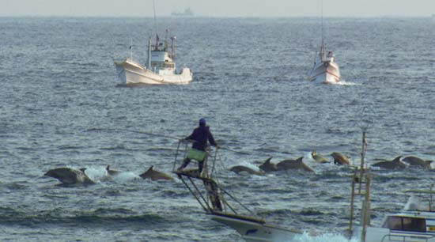

Dolphin Slaughter

The picturesque Japanese fishing village of Taiji (in southwestern Honshu) has become notorious in recent years for its annual dolphin hunt, in which some 2,500 dolphins and other small cetaceans are killed in coastal waters between September and April.
Using a technique called drive fishing, hunters in a line of motorized boats create a “wall of sound” between the dolphins and the open ocean by banging on metal poles lowered into the water; the poles have bell-shaped devices at one end to amplify the sound. The dolphins, who rely on sonar to navigate, are immediately disoriented and terrified and swim frantically to shore to escape the noise. There they are corralled into a small cove and trapped overnight by nets; at sunrise the next morning they are herded into an adjacent “killing cove,” where they are stabbed to death by hunters using harpoons, fish hooks, and knives.
The emerald waters of the cove literally turn red with the animals’ blood. Some injured or exhausted dolphins simply drown. Fishermen drag still-living animals onto boats with hooks and harpoons or tie them to boats by the tail, forcing their airholes under water. The animals are hauled by truck, or dragged over concrete roads by their tails, to a nearby warehouse for butchering; those who are still alive are stabbed again and left to die of their injuries or bleed to death. Some drown in their own blood.
How it affects the community
The sale and consumption of what amounts to toxic waste continues partly because the local and national governments refuse to issue warnings about the danger, beyond stating that pregnant women should not eat dolphin meat than once every two months.
The Japanese ministries of agriculture and health claim that dolphin meat eaten in moderate amounts is safe. Until recently dolphin meat was included in the lunches served to local schoolchildren. The menu was changed after tests commissioned by two Taiji city councilmen showed levels of mercury far higher than the government advisory limit for fish, .4 parts per million.
In other independent tests, levels of about 100 parts per million were common; one test of an internal organ of a dolphin sold at a Taiji supermarket showed a level of 2,000 parts per million.
Challenges
The Taiji dolphin slaughter continues. The Academy Award-winning documentary “The Cove” depicts the work of the International Marine Mammal Project in opposing the dolphin hunts in Taiji. The government claims the kills are part of Japan’s traditional culture when, in fact, they only started in 1969. Many Japanese who oppose the hunts are afraid to speak out publicly because of threats from the government and the extremist anti-foreigners groups. We continue to work inside Japan with Japanese activists and organizations to fight the dolphin killing and spread the news about mercury contamination of dolphin meat. We're also leading a campaign to influence Japan to stop killing whales and dolphins and we are requesting International Olympics Committee to ban whale and dolphin products at the Tokyo 2020 Olympics. We also joined in filing the successful first-ever lawsuit in Japan against the Taiji Whale Museum, which brokers many of the live dolphins caught in Taiji during the slaughter.
With success in the courts, the Museum and other dolphinariums cannot prohibit entry of activists.